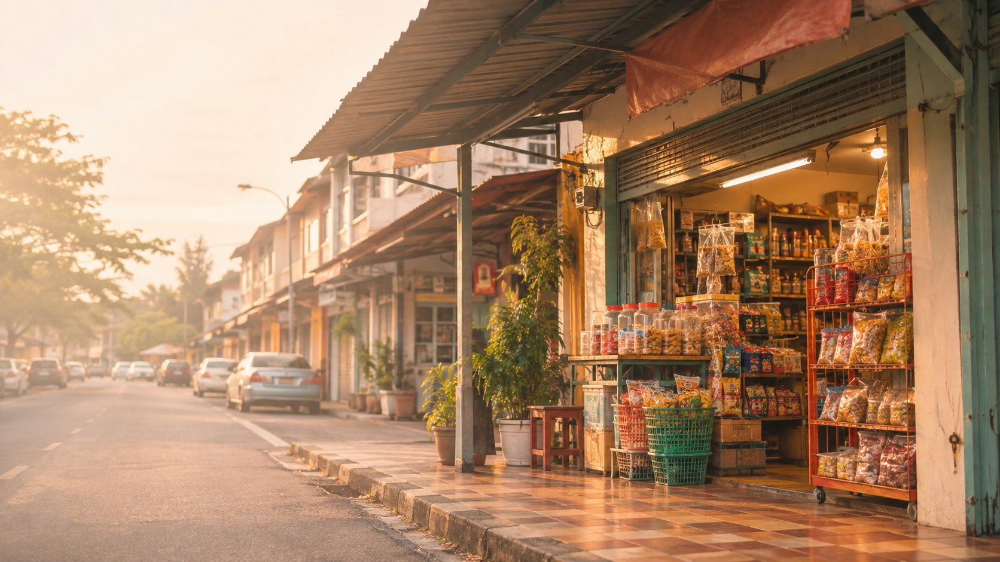

Singgah
Discover local businesses in Malaysia by category and location. Explore their products, read reviews, and get to know the people behind them.
Pre-launch
Singgah branding
The problem
Singgah helps people find local businesses in Malaysia when they know what they are looking for, or simply want to see what is nearby. It brings business profiles, products and community reviews into one discovery experience.
How it works
For visitors
- Search by category and location
- Explore business profiles and products
- Read and leave reviews
For business owners
- Register a business
- Manage its profile and products
- Add and update photos
For administrators
- Review new businesses through an admin panel
Technical approach
Singgah uses Next.js and TypeScript for the web application, Tailwind CSS for its interface, and Supabase in its stack. The experience keeps visitor discovery, owner management and review of new businesses distinct, while category and location provide direct ways to narrow a search.
Built with
Built in collaboration with Azfar (@azfarsharifuddin).